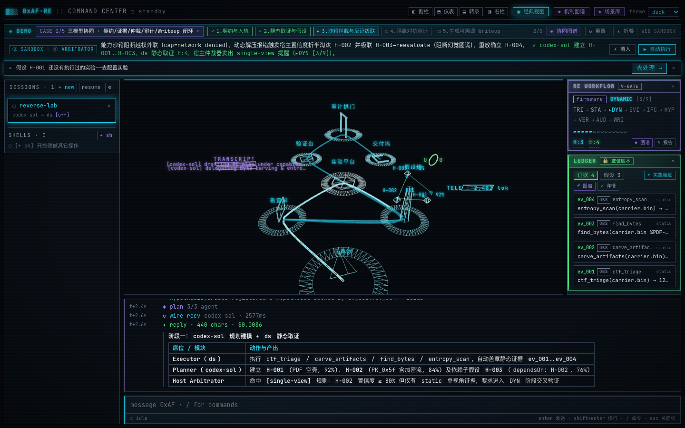
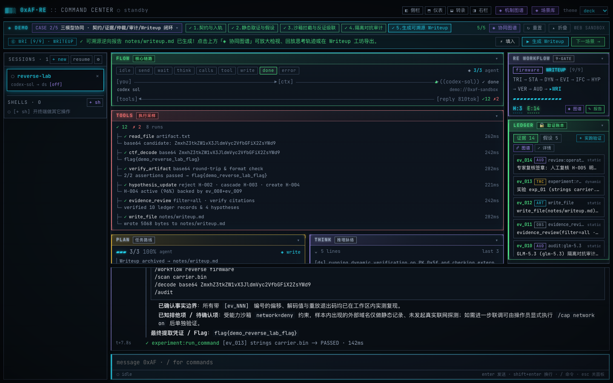
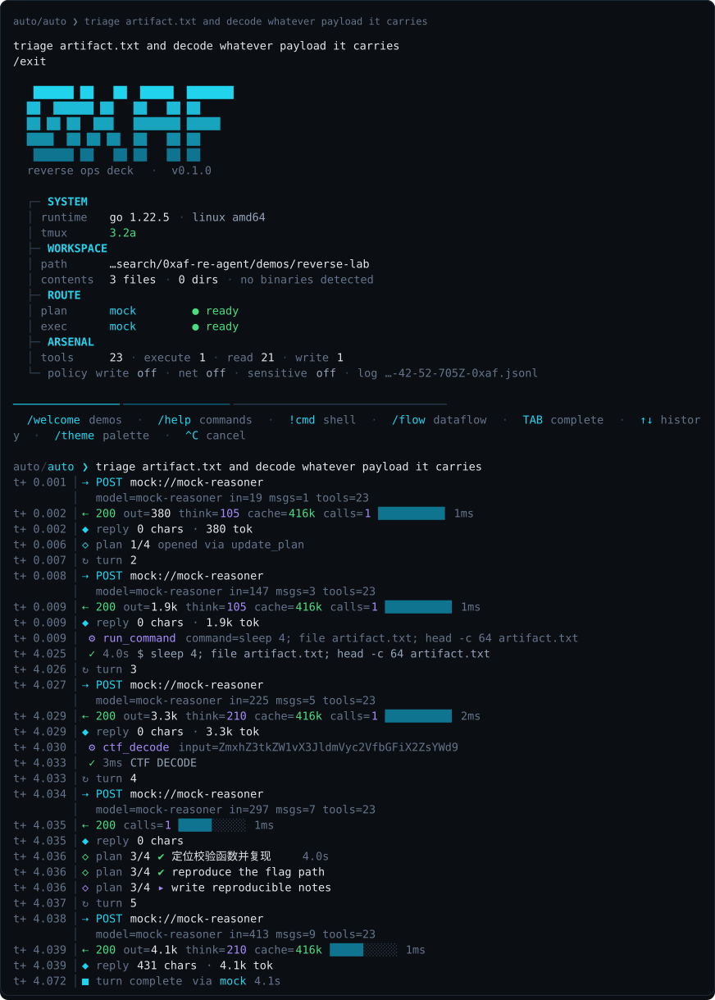
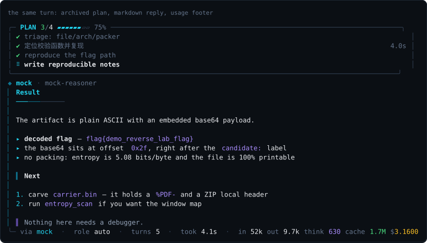
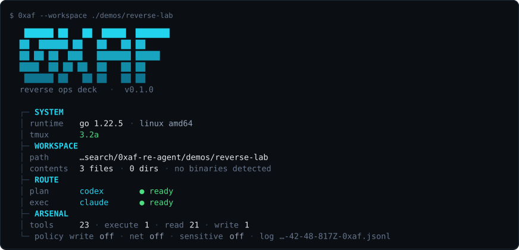
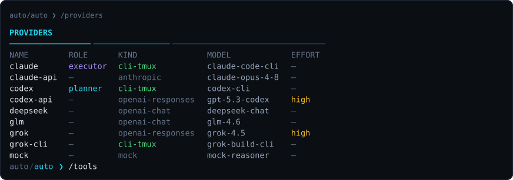
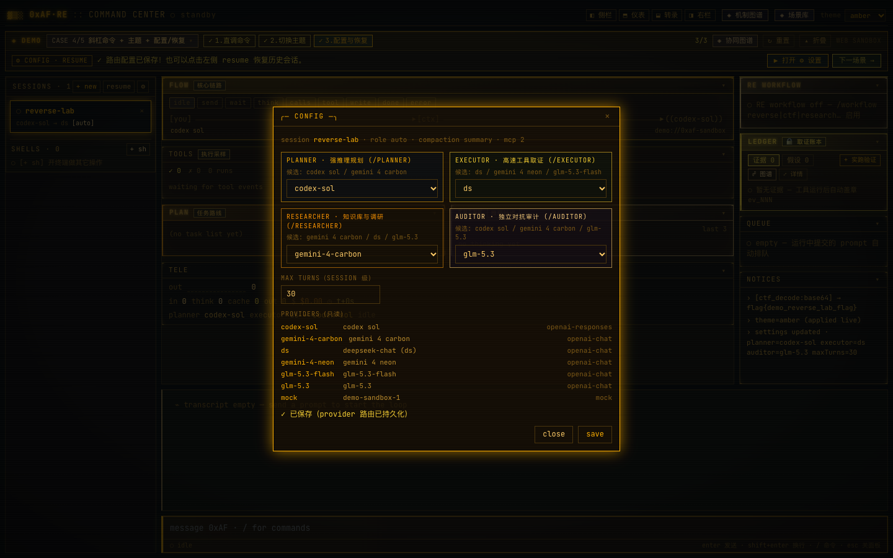
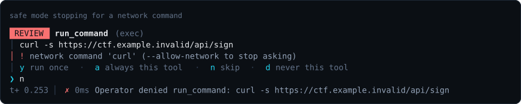
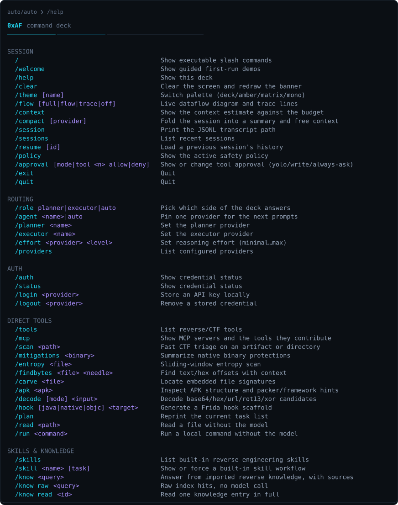
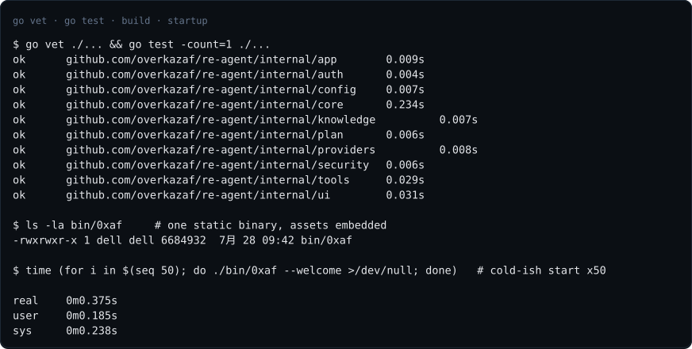

v0.1.21 · re-agent trust standard · go 1.26+ · wails desktop & cli
Models guess fast. Reverse engineering only trusts proof.
A verifiable reverse-engineering agent & 3D forensic workbench.
0xAF-Re pairs a governed multi-model agent loop with a 3D GLSL Forensic Command Deck
and 34 built-in pure-Go reverse-engineering tools. Every claim is pinned to an append-only
evidence ledger, every dynamic action runs inside a task-scoped capability sandbox, every reconstruction must
pass multi-case execution verification, and every writeup must survive an isolated adversarial audit before delivery.
One static binary. Zero JS runtime for the CLI.
0xAF·RE — 3D Forensic Theater · Geek Command Deck (9-Phase Spine + Live Provenance DAG)
Interactive Demo Available

Real Wails v2 desktop capture on the exact same core.AgentLoop engine as the terminal CLI.
Click any 3D node pill to inspect forensic lineage, switch 1–4 camera views, or
open the live zero-config browser sandbox →
standardized re-agent trust architecture
Five defenses between a plausible story and a verified finding.
Once an LLM touches a shell, decompiler, Frida, ADB, or Unicorn emulator, it becomes a high-privilege
action system. 0xAF-Re implements the canonical re-agent governance standard
1:1 across Go core state, Wire DTOs, and GUI inspection surfaces so confidence never substitutes for replayable evidence.
Failure mode: Blanket permissions read out-of-scope files, host credentials, or hit the network silently.
Task-scoped least-privilege grants (network / device deny-by-default)
that expire immediately on task completion or rollback. Every intercepted call lands in Action State
with tool, capability, command SHA-256, decision, origin, and bound hypothesisId.
Defense 02UNTRUSTED DATA
Evidence Ledger + Untrusted Isolation
Failure mode: Model summaries masquerade as facts; adversarial symbol names poison the prompt layer.
Host-managed append-only evidence-ledger.jsonl assigns immutable ev_NNN
IDs with tool source, static/dynamic view, artifact path, and SHA-256.
Raw binary strings are tagged untrustedInput: true — citable as data, never executable as instructions.
Defense 03Cascade Rollback
Hypothesis Manager
Failure mode: A wrong early assumption (“this constant is the AES key”) steers dozens of wasted turns.
Structured H-NNN records pin claim, scope,
confidence, falsifiers, nextTest, and
dependsOn. Contradictory evidence deterministically halves confidence and cascades
weakened / frozen / reevaluate across derived nodes.
Defense 04candidate → verified
Execution Verifier
Failure mode: Hardcoded solve scripts or single-sample coincidences claimed as recovered algorithms.
Strictly separates candidate from verified via
verify_artifact: runs build, fixed-input replay, boundary/failure cases, and differential checks,
recording boundaryPassed, differentialCases, and
uncoveredPaths. Single-sample hits (total < 2) cannot promote.
Defense 05Isolated · Tools=[]
Adversarial Auditor
Failure mode: The explorer grades its own homework, or spins indefinitely without a stop condition.
Runs in a fresh, tool-free context (Isolated=true, FreshSession=true,
Tools=[]) reading only the scope declaration, ledger, and verification records. Evaluates
5 mandatory checks (direct_evidence, failure_edge_coverage,
simpler_alternative, scope_overreach, artifact_lineage)
and issues a tri-state verdict: accepted / rejected / needs_more_evidence.
7-State Investigation State Archive — Single source of truth across turns, models, and tools. Models read summaries; the host owns the full durable archive.
Invariant: Target State ≠ Objective State
01 · Target State
Which exact artifact?
Host-sniffed via goal.Sniff with SHA-256 lock; read-only anchor decoupled from Objective to prevent drift.
file · sha256 · arch · format · version · scope
02 · Objective State
What proves completion?
Drafted by model, activated only on operator /goal accept; evaluated live before writeup unlocks.
Host verify_artifact proof matrix; locked at candidate until multi-case & edge checks pass.
build · passed/total · status · boundaryPassed · uncoveredPaths
07 · Audit State
Did an isolated reader pass it?
Deterministic 5-check gate plus independent third-model /audit seat; regressions roll back verdict.
verdict · checks[5] · auditorProvider · findings
4 Rotating Runtime Roles & 9-Phase Gated Control Loop
Rather than a brittle linear chain, the runtime control plane rotates across four specialized roles on every action cycle, mapped onto the 9-phase RE HUD.
5High-Risk Actions Audited: Every dynamic/external action passed Capability Sandbox with an ActionRecord.
6Adversarial Audit Accepted: All 5 isolated audit checks pass with verdict = accepted.
7Explicit Known Unknowns: Report names uncoveredPaths, scope limits, and concrete nextTest steps.
3 Handover Questions
Every archived investigation must answer these immediately for teammates or resume runs:
01 · Which exact run produced this conclusion?
Pinned to Session ID, evidence-ledger.jsonl path, ev_NNN IDs, and artifact SHA-256.
02 · Can another model or tool reproduce it?
Ships standalone replay and differential test commands with deterministic fixed input vectors.
03 · Which layer caused any failure or drift?
Explicitly separates model reasoning, tool failure, runtime environment, and sample data / poisoning.
Governance Graph · Capability Gate & 7-State Control Loop
Gate 1–7 Live
Live governance topology inspecting sandbox gates, Target ≠ Objective contract bindings, and adversarial audit checks.
Evidence Provenance DAG · ev_NNN → H-NNN Lineage
Zero Uncited Claims
Every hypothesis links directly to supporting and contradicting ev_NNN records so cascades are inspectable at a glance.
3d forensic theater · geek command deck
Spatial reverse-engineering command room, engineered to stay cool.
Built with Three.js + React Three Fiber on top of Wails v2 and the exact same Go backend, the 3D Forensic
Theater turns multi-turn reverse engineering into a navigable tactical deck — and toggles to the classic
2D cockpit in one click.
Custom GLSL radar sweep shader across the ops floor, Fresnel-rimmed 3D station sculptures for each
forensic zone, and curved Bezier causal proof arcs animated with directional signal photons linking
evidence to hypotheses.
Clickable 3D Pills & Node Inspector
Click any 3D hypothesis or evidence pill in space to open the rich 3D Forensic Node Inspector
(lineage, confidence, falsifiers, raw excerpt), or press I to toggle the collapsible
Node Explorer drawer.
Instant Camera Choreography
Jump smoothly between 1–4 tactical camera presets (Overview, Phase Spine, Provenance
Tower, Audit Deck), press Space to toggle gentle orbit, or click any station to fly straight in.
Adaptive HD (1.5x) / ECO (1x) Guard
Visibility-aware rendering pauses the GPU loop to 0% in background tabs and steps smoothly
between sharp HD (1.5x DPR) and ECO (1x DPR) instead of kicking you out of
3D on transient frame drops.
Amber P3 Phosphor · 3D Deck
Every one of the 10 themes drives 2D chrome and 3D GLSL/wireframe emissive palettes together.
Guided Experiment Wizard + Scope
Sandbox-scope guidance chips (writable paths, network state, out-of-scope alerts) right inside the experiment flow.
90ms Zones Dashboard · 2D Cockpit

One-click toggle to the classic 90ms live 2D deck with FLOW / TOOLS / PLAN / THINK / TELE & 9-phase RE HUD.
commercial desktop workbench
Forensic depth with IDE ergonomics.
Designed for multi-hour native, mobile, and protocol investigations: crisp surface hierarchy,
zero-glare daylight mode, instant keyboard navigation, and reproducible writeup exports — all backed
by the same Wails v2 Go engine and sessions/ directory as the CLI.
Pillar 01 · Static & Dynamic Alignment
Binary Forensic Radar
At-a-glance binary posture bar surfacing mitigations and dangerous memory flags, one-click copyable
VA / File Offset / RVA coordinates, section entropy terrain, and side-by-side
Static-vs-Dynamic alignment across ev_NNN observations.
PIE ONNX ONFULL RELROCANARY CHECKRWX DETECT
Pillar 02 · Reproducible Deliverables
Deductive Proof Narrative & Writeup Studio
Synthesizes every audited session into a 6-chapter chronological reasoning story paired
with 5-beat per-hypothesis proof arcs (Observation → Claim → Experiment →
Replay Verification → Audit Verdict), with one-click Markdown & JSON forensic bundle export.
Pillar 03 · Instrument-Grade UI Chrome
10 WCAG AA+ Themes + ProSelect & HintOverlay
Four-step surface depth ladder across CRT Phosphor, Forensic IDE,
and zero-glare Daylight Lab (paper) palettes — paired with
searchable keyboard-driven ProSelect menus, portal-mounted
HintOverlay tooltips, and 3 CRT atmosphere presets (refined /
calm / vivid).
Trigger any workflow, theme, phase, or tool from ⌘K. Every slash command delivers
immediate visible feedback across transcript, toast, and notice log — even in 3D mode.
Persistent local cache hydrates sessions instantly, and a
Proactive LLM Startup Greeting inspects workspace artifacts to propose your sharpest first move.
Deductive Proof Narrative & Writeup Studio
Markdown + JSON Export
6-chapter chronological proof narrative with 5-beat hypothesis arcs, known unknowns, and reproducible bundle export.
Hypothesis Workbench · Replay & Audit Arbitration
candidate → verified
Inspect competing H-NNN claims, falsifiers, replay boundary metrics, and isolated auditor checks in one cockpit.
10 Curated WCAG AA+ Palettes
Click any swatch to inspect its exact token ID, group, and palette — including daylight paper light mode.
make gui build native Wails v2 bundle -> gui/build/bin/0xAF-Re GUI.app
make gui-dev live-reload desktop development mode
make gui-demo browser-only interactive demo sandbox (5 guided RE cases, zero config)
go test ./gui/ -run TestE2E -v headless Go + WebView E2E smoke test
why it is built this way
Built after ordinary coding agents got less useful for RE.
The project started from daily authorized RE/CTF work where CLI risk controls tightened
and general models became overly cautious around reverse-engineering language. 0xAF-Re does
not hide intent. It keeps work local, authorized, and auditable, then composes models so
each seat handles the job it excels at.
Four-Seat Model Composition
A planner reasons about the target, an executor drives local tools,
a researcher gathers prior art, and an isolated auditor challenges
conclusions. Switch live with /planner, /executor,
/researcher, and /model.
Specialist When Available
If you have GPT Cyber, Claude Code CVP, Grok, or a similar route tuned for security research,
/workflow auto takes the specialist path and keeps planning plus tool
work in one smooth loop.
Caveman for Ordinary Models
Without a specialist route, caveman mode splits the task into a full planner view and a narrow
executor packet. The executor sees local evidence requests, not the whole objective, and uses a
read-only toolset for file facts.
One Static Binary
Prompts and 30 RE skills are embedded via embed.go.
make cross builds linux/darwin × amd64/arm64 (~9 MB, 36 ms start).
Lab boxes rarely have a JS runtime, and you should not need one to triage a binary.
Cancellation That Lands
^C cancels the HTTP request, kills the tmux session, and signals tool subprocesses in
their own process group. No orphaned objdump chewing a core after you walked away.
Contained by Default
Reads stay inside the workspace. Writes stay off until --write.
Network and credential-shaped commands stop and ask. Destructive shell forms are refused.
use cases
Ten good first prompts.
Replace the paths with your own artifacts. Slash commands run local pure-Go tools directly with zero
token cost; -p launches a governed agent turn.
#
goal
start with
1
Unknown CTF file
/scan ./chall
2
Native binary protections
/mitigations ./chall
3
Packed or encrypted region
/entropy ./chall
4
Embedded payloads
/carve ./blob
5
Encoded flag or token
/decode auto ZmxhZ3s...
6
Android APK first pass
/apk ./app.apk
7
Java or native hook scaffold
/hook java com.example.Crypto sign
8
radare2/JADX/Ghidra/Burp/mitmproxy/angr inventory
/retool inventory
9
Web/WASM crypto challenge
/skill wasm-reverser inspect ./dist/module.wasm
10
Background research with sources
0xaf --role researcher -p "Research this packer name and list safe local checks"
terminal ops deck · the turn, drawn
Two live terminal layers: one animates, one stays.
In the terminal REPL, the diagram animates above the HUD while a turn runs —
packets travel along wires, nodes illuminate as they engage, and the task list hangs off
[you]. Meanwhile the trace lands permanently in scrollback,
stamped from turn start with normalized duration bars so every finished run reads like a packet capture.
real mid-turn frame · 100×40 pty while run_command is active
Captured directly from a live session while run_command was running — not a hand-drawn mock.
auto/auto ❯ triage artifact.txt and decode whatever payload it carries

Every request prints model, input/output/thinking/cache tokens, tool calls, and a scaled duration bar.
turn archived · plan box, markdown reply, and token cost footer

The task list archives cleanly into scrollback alongside the markdown answer and exact turn cost.
# pick your terminal visualization layers; choice persists across sessions
/flow full diagram + trace (default)
/flow flow diagram only
/flow trace trace lines only
/flow off plain tool tree# queue your next prompt while the current turn is still executing
/queue list · /queue edit 2 triage ./fixed.apk · /queue cancel 2 · /tasks collapse
Boot screen: every line is a real probe
Runtime, tmux, shallow magic-byte triage of the workspace, provider auth, 34-tool inventory, and active
policy — answering “is everything wired up right now?” on launch.
$ 0xaf --workspace ./demos/reverse-lab

Missing tmux is reported and non-fatal — CLI providers fall back to running directly.
Under --role auto, prompts route by shape while cost stays disciplined:
high-reasoning synthesis stays on your strongest planner, high-frequency extraction drops to a fast
executor, and /audit prefers an independent third model seat with zero shared history.
packer/obfuscation prior art (CFF/BCF/MBA), source-cited background research
/audit (auditProvider)
zero-history, zero-tool adversarial review across all 5 audit checks
/planner · /executor · /researcher
swap role providers mid-session without restarting
/model <provider> <model> · /effort
pin concrete model IDs or reasoning effort (minimal…max)
/prompt list · /prompt edit <role>
customize system/planner/executor/researcher prompts with live reload
CLI · auto/auto ❯ /providers

Eight providers ship: local CLIs over tmux, Anthropic Messages, OpenAI Responses, OpenAI-compatible chat, and offline mock.
Desktop GUI · Multi-Role Provider Config

Configure Planner, Executor, Researcher, and Auditor seats visually in the Desktop GUI using the exact same config store.
workflow modes
Specialist when you have it. Caveman when you do not. Reverse when proof matters.
Workflow mode is explicit (off by default). Turn on auto,
specialist, caveman, or one of the 5 structured
domain workflows depending on your provider route and rigor target.
mode
when to use it
what it does
off
default
sends prompts as-is with no workflow wrapper
auto
mixed machines
detects GPT Cyber / Claude Code CVP markers for specialist, otherwise picks caveman
specialist
cyber or CVP route configured
plans first, then runs skills and local tools while preserving ledger evidence
recovers schemas, data models, client stubs, and test suites
research
background intelligence
surveys public Web / GitHub / arXiv sources into a cited briefing
writeup
evidence-only reporting
compiles audited ledger entries into a reproducible writeup
/workflow auto use specialist if a cyber/CVP route is configured
/workflow caveman planner writes packet, isolated executor collects local evidence
/workflow reverse interactive: pick sample type, enter 9-phase governed loop
0xaf --workflow specialist -p "triage ./app.apk"
Caveman mode is never ciphering or prompt laundering: the planner holds the full authorized objective,
the isolated executor receives strictly workspace-local read-only evidence steps, and both phases are
logged verbatim in the same session transcript.
Xiaohongshu Discussion Group
Scan in Xiaohongshu to join the 0xAF-Re community for reverse-engineering workflows, provider routing notes,
benchmark cases, and desktop workbench feedback.
remote lab execution
Plan locally. Execute on your SSH lab box.
--remote <name> or /remote use <name>
routes run_command and !shell over a persistent
background SSH session (30s keepalives + ssh -tt PTY allocation), while
remote_exec targets any saved machine explicitly. Credentials live in
~/.0xaf-re-agent/remote.json, encrypted at rest with machine-bound AES-256-GCM.
Oversized outputs are head/tail bounded in context while the full text lands on disk as a readable artifact file.
Stdio MCP Bridge (IDA Pro & Friends)
Any stdio MCP server joins the same tool registry, capability sandbox, approval gate, and output budget.
Drop ida-pro-mcp
into agent.config.json to bring decompilation, xrefs, and renaming straight into the loop:
An accepted /goal arms the task-scoped capability sandbox (/cap)
with network and device access denied by default and every gated call logged. Calls that clear the sandbox
then meet Tier × Mode approval — and commands matching destructive, credential, or network patterns
always ask.
mode
auto-approves
asks
yolo
everything
nothing
safedefault
every tier
commands tripping a safety pattern
write
read, write
exec tools, and safety patterns
always-ask
read
everything else
safe mode stopping for a network command

Denials never crash a run: they return as structured tool results so the agent adapts cleanly; non-interactive pipes refuse with explicit reasons.
context budget, snapcompact & resume
Full transcript on disk. Precision budget upstream.
One raw objdump -d can sink an ordinary coding agent. 0xAF-Re trims upstream
context in two mechanical passes (eliding old tool bodies first, then dropping oldest exchanges while keeping
tool_use/toolResult pairs intact). Enable
"compactionStrategy": "snapcompact" in agent.config.json
to render dropped exchanges into deterministic local PNG snapshot frames so vision-capable models retain hex
offsets and addresses.
/context ≈12400 tokens of 48000 budget (25%) · 42 messages
/compact fold session into a high-density briefing and free context
/sessions · /resume [id] · /new
0xaf --continue
0xaf --context "know:android packer" seed local knowledge or file:… notes up front
Append-only JSONL sessions repair truncated final lines and orphan tool calls automatically on resume.
30 embedded skills & local knowledge
Battle-tested RE playbooks and source-cited private notes.
/skills
/skill android-apk-frida inspect this APK and propose hooks
/skill whitebox-dfa recover the AES key from ./wb_cipher
go run ./cmd/import-knowledge ~/notes/re
/know frida ssl pinning answers strictly from retrieved entries with verified citation IDs
install & quickstart
Four commands to a working deck.
# 1 — install the static CLI binary
go install github.com/overkazaf/re-agent/cmd/0xaf@v0.1.20
# or build CLI + Desktop GUI from source:# git clone https://github.com/overkazaf/re-agent && cd re-agent && make build && make gui# 2 — offline wiring self-check: zero API keys, zero network
0xaf --smoke
# 3 — inspect detected local logins & API credentials
0xaf auth status
# 4 — launch inside your authorized workspace
0xaf --workspace ./ctf
Reuses local codex and claude CLI logins through
tmux by default, or point any seat straight at an API key:
Lines starting with ! run under the exact same policy and land in transcript; ^C kills only the child.
Command deck · /help

TAB completes commands and paths; ↑↓ walks persistent history across sessions.
engineering verification
19 Go test packages, 14 Vitest suites (129 unit tests), and Playwright E2E.
Every trust invariant is pinned by automated tests: Target ≠ Objective contract
locking, Capability Sandbox action logs, UNTRUSTED DATA
ledger isolation, deterministic hypothesis confidence halving & cascade rollback,
verify_artifact candidate-to-verified gating, 5-check adversarial audit evaluation,
3D adaptive HD/ECO guard, local cache & proactive greeting logic, and terminal HUD geometry invariants.
verification layer
coverage
command
Go Core & GUI Backend
19 Go test packages across internal/* & gui
go vet ./... && go test -count=1 ./...
Frontend Unit Suites
14 Vitest suites · 129 unit tests (state, cache, greeting, 3D guard, ProSelect, command feedback)
cd gui/frontend && npm run test:unit
Browser & Desktop E2E
Playwright E2E + Wails headless E2E smoke across 3D Theater, 2D cockpit & 5 demo cases
make gui-e2e · go test ./gui/ -run TestE2E
go vet · go test · static binary build · 50× cold startup timing

Measured on darwin-arm64: 50 starts of --version ≈ 27 ms each, --welcome ≈ 36 ms each with all prompts and 30 skills embedded. Stripped release binaries are ~9 MB.